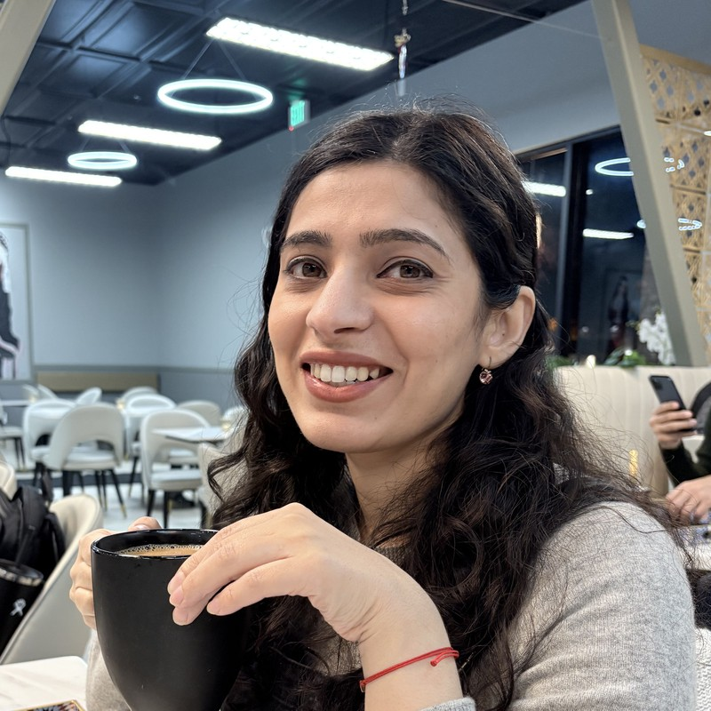

Applied AI Research
I work on how people find things. Multimodal search, retrieval, and generative AI for commerce, and the slow work of getting a model from promising to in production.

About
I lead the applied research team for Content Understanding at eBay, a group of researchers across San Jose and Bangalore working on visual and multimodal search, generative AI for selling, catalog matching, and pricing.
Before managing I spent six years as a researcher on search: embedding based retrieval, ranking, visual search, and natural language understanding of queries. Most of what I have built sits in the gap between a model that works in a notebook and a system that serves millions of people under a latency budget. That gap is where I find the work interesting, and it is where most research quietly dies.
Lately I have been building research infrastructure as much as models. Autonomous training and evaluation running as reusable skills on our own GPUs, and tooling that reads experiment logs and suggests what to try next. Research teams lose more time between experiments than during them.
Earlier: a master's at UC Santa Cruz, where I worked in the Natural Language and Dialogue Systems Lab on stylistic variation in language generation, and four years at Goldman Sachs building compliance systems.
In my spare time I love running after my toddler and relearning life. I often find myself thinking about the world we are building for the next generation.
Record
A dated record of the work, most recent first.
Writing
Nothing published here yet. First pieces planned: what breaks when you put a vision language model in a live search path, and why research teams lose most of their time between experiments rather than during them.